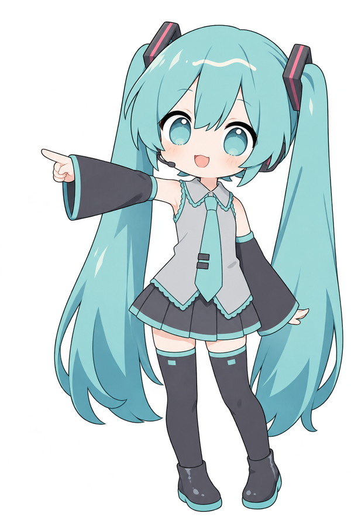

Fenómeno óptico aplicado
Sin interacción detectadaColoca una fuente de luz y pon un espejo, vidrio, lente o bloqueador en su trayectoria. Aquí aparecerá el fenómeno que se está aplicando.
Teoría: fundamentos de Óptica
Desplázate hacia abajo para consultar todos los temas. Las distancias deben expresarse en unidades compatibles.
1. Concepto de luz
La luz es radiación electromagnética que transporta energía y puede propagarse en el vacío. En óptica geométrica se representa mediante rayos que indican su dirección de propagación. En el vacío, su velocidad, frecuencia y longitud de onda se relacionan por:
- c: velocidad de la luz en el vacío (≈ 3.00 × 10⁸ m/s).
- v: velocidad en el medio (m/s).
- f: frecuencia (Hz).
- λ: longitud de onda (m).
Ejemplo: si una luz tiene f = 5 × 10¹⁴ Hz, entonces λ = c/f ≈ 6 × 10⁻⁷ m = 600 nm, correspondiente a luz visible.
2. Velocidad de la luz e índice de refracción
La luz alcanza su máxima velocidad en el vacío; al entrar en materiales como agua o vidrio se propaga más lentamente. El índice de refracción compara ambas velocidades.
- n: índice de refracción, sin unidades.
- c: velocidad en el vacío (m/s).
- v: velocidad en el material (m/s).
Ejemplo: en un vidrio con n = 1.5, v = (3.00 × 10⁸)/1.5 = 2.00 × 10⁸ m/s.
3. Reflexión y refracción
Reflexión: la luz rebota en una superficie. La ley de reflexión indica que el ángulo de incidencia es igual al de reflexión; ambos se miden desde la normal, línea perpendicular a la superficie. Refracción: la luz cambia de velocidad y, generalmente, de dirección al pasar entre medios diferentes.
- θᵢ: ángulo de incidencia; θᵣ: ángulo reflejado.
- n₁, n₂: índices de los medios inicial y final.
- θ₁, θ₂: ángulos de incidencia y refracción, medidos desde la normal.
Ejemplo: un rayo incide con 30° sobre un espejo plano y se refleja con 30°. Al pasar del aire al vidrio, la ley de Snell permite calcular el ángulo refractado.
4. Fibra óptica
Una fibra óptica transmite información mediante pulsos de luz a través de un núcleo rodeado por un revestimiento de menor índice de refracción. La luz puede permanecer guiada por reflexión interna total cuando viaja del medio de mayor índice al de menor índice y supera el ángulo crítico.
- θc: ángulo crítico.
- n₁: índice del núcleo; n₂: índice del revestimiento.
Ejemplo/aplicación: internet de alta velocidad y telecomunicaciones envían datos como pulsos luminosos con bajas pérdidas a grandes distancias.
5. Espejos
Los espejos planos forman imágenes virtuales, derechas y del mismo tamaño. Los espejos esféricos pueden ser cóncavos (convergentes) o convexos (divergentes). La ecuación de espejo relaciona las distancias del objeto e imagen con la distancia focal.
- f: distancia focal; do: distancia del objeto.
- di: distancia de la imagen; R: radio de curvatura.
Ejemplo: si f = 10 cm y do = 30 cm, 1/di = 1/10 − 1/30 = 1/15; por tanto, di = 15 cm (con la convención de signos habitual).
6. Lentes
Las lentes refractan la luz. Las convergentes (convexas) concentran rayos paralelos en un foco; las divergentes (cóncavas) los separan. Para lentes delgadas se usa una ecuación similar a la de los espejos.
- f: distancia focal; do: distancia del objeto.
- di: distancia de la imagen; m: aumento lateral (sin unidades).
Ejemplo: una lente convergente con f = 10 cm y un objeto a 30 cm produce, con la convención usual, una imagen a 15 cm; el aumento es m = −15/30 = −0.5, invertida y de la mitad de tamaño.
7. El telescopio
Un telescopio óptico utiliza un objetivo para recoger la luz de objetos lejanos y un ocular para observar la imagen. En el modelo astronómico sencillo, el aumento angular depende de las distancias focales del objetivo y del ocular.
- M: aumento angular (el signo negativo indica imagen invertida en el modelo).
- fo: distancia focal del objetivo.
- fe: distancia focal del ocular.
Ejemplo: si fo = 600 mm y fe = 20 mm, M = −600/20 = −30; el telescopio ofrece un aumento angular de 30× y la imagen se observa invertida.
Guardar y Cargar Simulación
Guarda todos los objetos colocados, sus posiciones, tamaños, colores y orientación, la vista del simulador y la explicación del fenómeno óptico que aparece en pantalla. Después puedes cargar el archivo para continuar tu práctica.
JSON permite volver a abrir y editar la escena. TXT guarda un reporte para leer o entregar. PNG guarda una imagen de los rayos y objetos visibles en el área de simulación.

Evaluación Teórica
Contesta 5 preguntas aleatorias de un banco de 20. Toda la evaluación se realiza aquí mismo, dentro de esta pestaña; no abre otra ventana ni descarga otro archivo. El avance aumenta con cada respuesta, sea correcta o incorrecta.